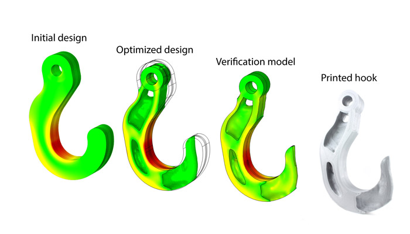

Optimisation Topologique avec SANTO
C'est quoi l'Optimisation Topologique ? :
L'Optimisation Topologique est une méthode mathématique qui optimise la disposition des matériaux à l'intérieur d'un espace de conception donné. Elle prend en compte des paramètres de conception tels que les charges attendues, les conditions aux limites, les contraintes, les matériaux et les coûts. L'objectif principal de l'optimisation topologique est de maximiser les performances d'un système en créant des conceptions avec une masse minimale et une rigidité maximale, et elle est généralement intégrée tôt dans le processus de conception.
L'optimisation topologique implique la résolution d'équations mathématiques pour déterminer la distribution optimale des matériaux dans un domaine de conception donné. Les équations spécifiques peuvent varier en fonction de la méthode d'optimisation utilisée et des objectifs spécifiques de l'optimisation. Cependant, voici un exemple simplifié d'une équation couramment utilisée dans l'optimisation topologique :
Supposons que nous ayons un domaine de conception 2D (par exemple, une plaque) et que nous souhaitions optimiser la distribution des matériaux pour minimiser la déformation sous une charge donnée. L'équation de base pour ce problème pourrait être la suivante :
Supposons que nous ayons un domaine de conception 2D (par exemple, une plaque) et que nous souhaitions optimiser la distribution des matériaux pour minimiser la déformation sous une charge donnée. L'équation de base pour ce problème pourrait être la suivante :
\( J = \frac{1}{2} \int_{\Omega} \sigma(\mathbf{u}) : \varepsilon(\mathbf{u}) \, d\Omega \)
Où :
- \(J\) est la fonction objectif que nous cherchons à minimiser (par exemple, la déformation totale).
- \(\Omega\) représente le domaine de conception.
- \(\mathbf{u}\) est le champ de déplacement dans le domaine.
- \(\sigma(\mathbf{u})\) est le tenseur de contrainte dépendant du déplacement.
- \(\varepsilon(\mathbf{u})\) est le tenseur de déformation calculé à partir du déplacement.
- L'intégrale sur \(\Omega\) représente l'intégration sur tout le domaine.

Figure 2: Exemple d'optimisation topologique
Source : https://www.3dnatives.com/en/topology-optimisation140820184/
Source : https://www.3dnatives.com/en/topology-optimisation140820184/